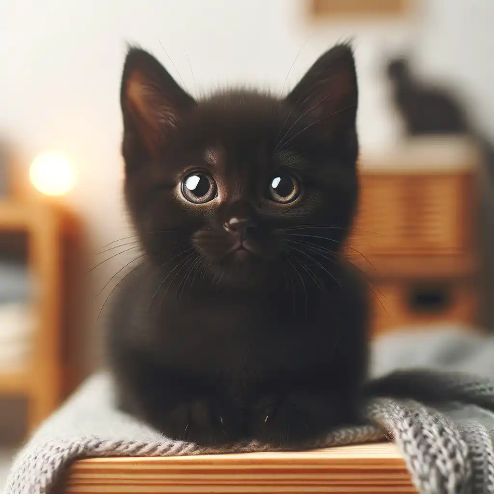
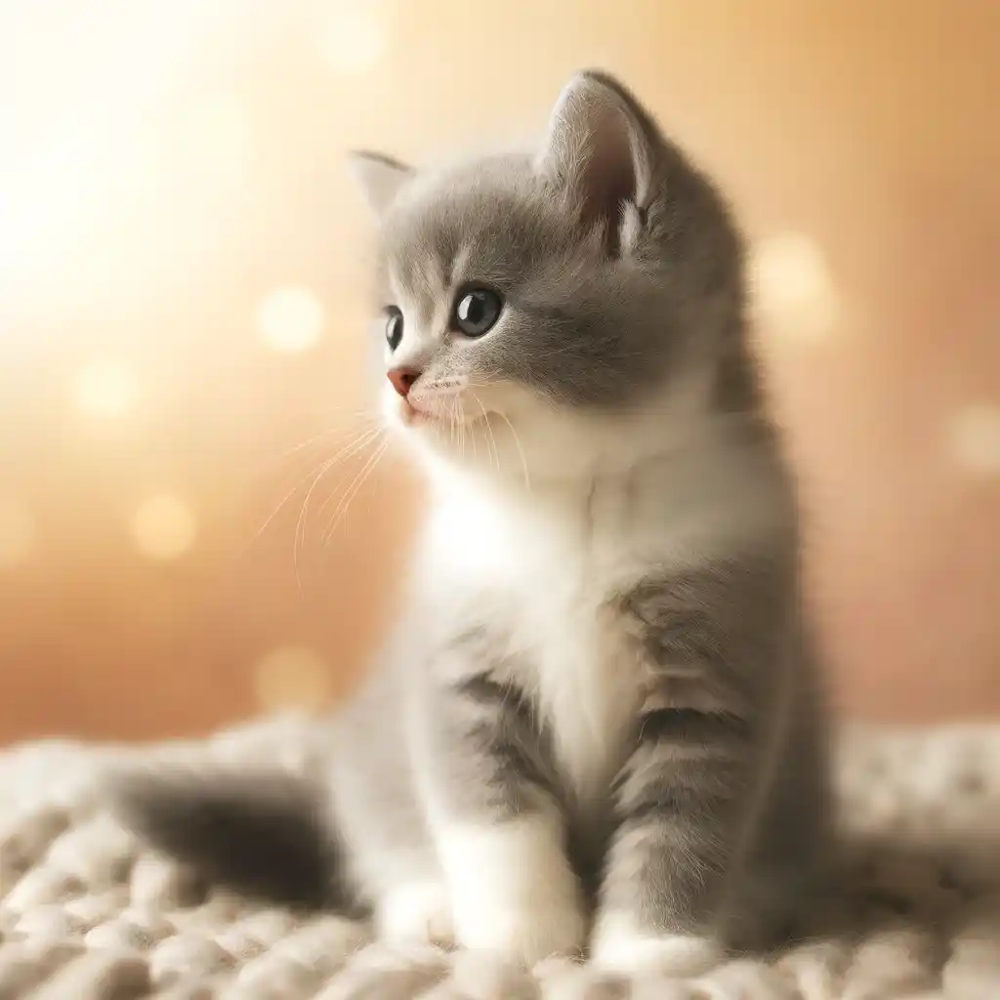
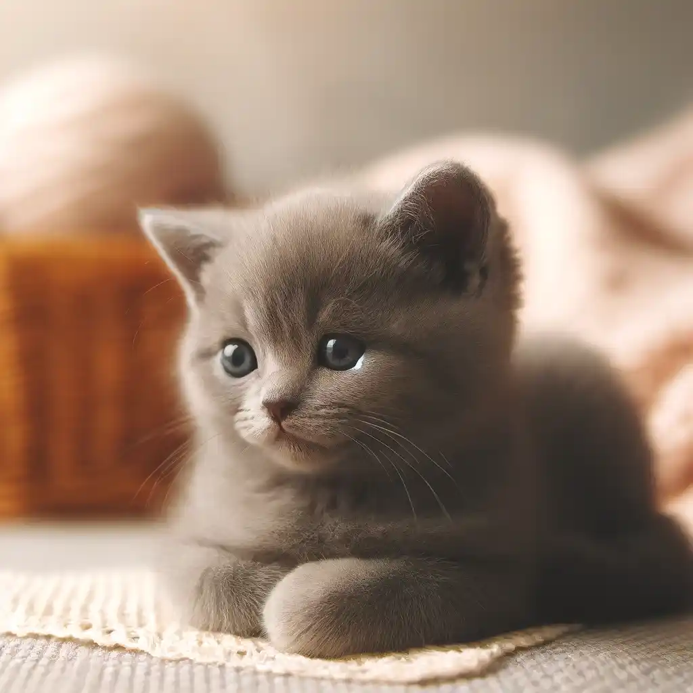
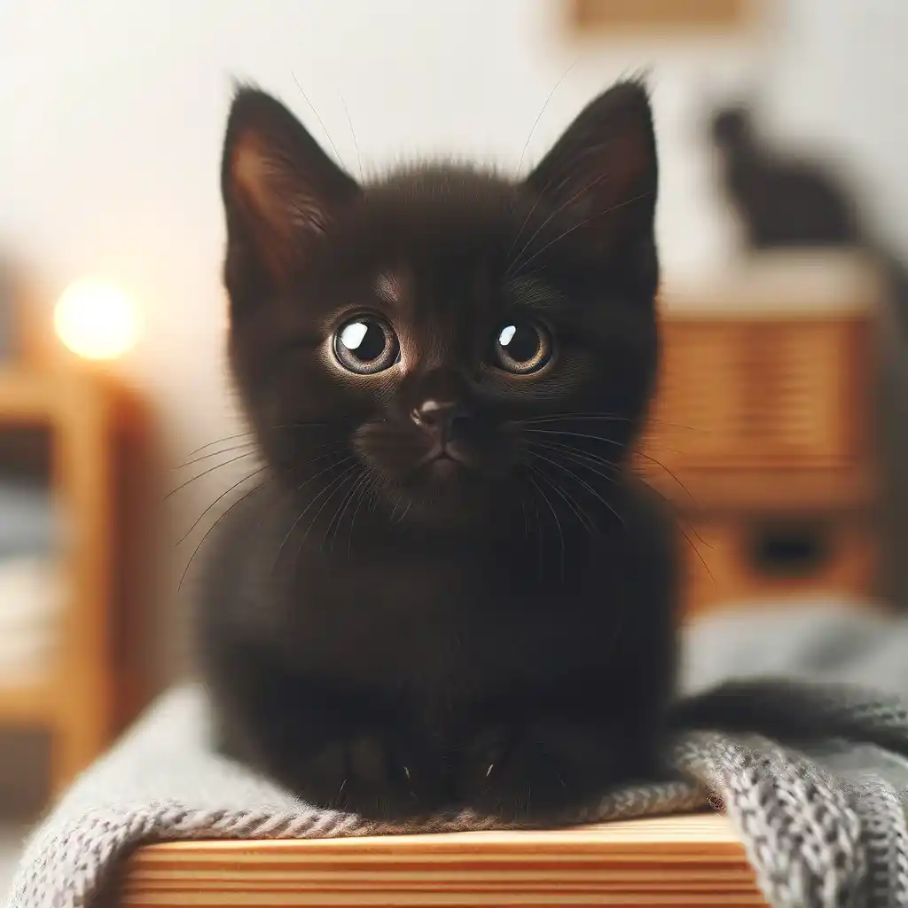
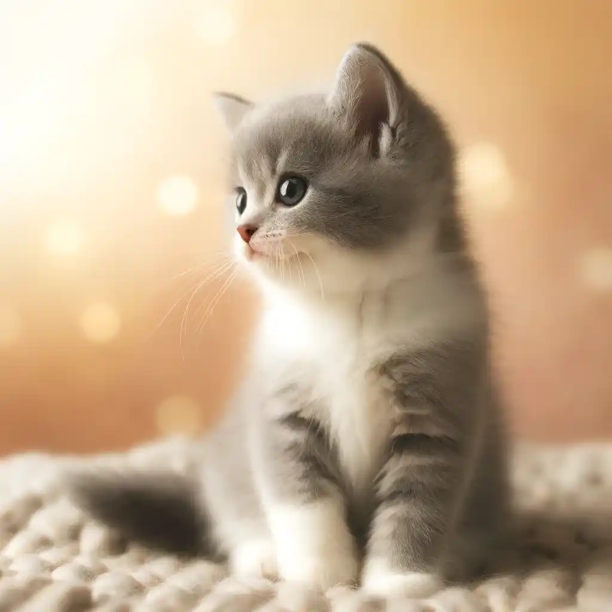
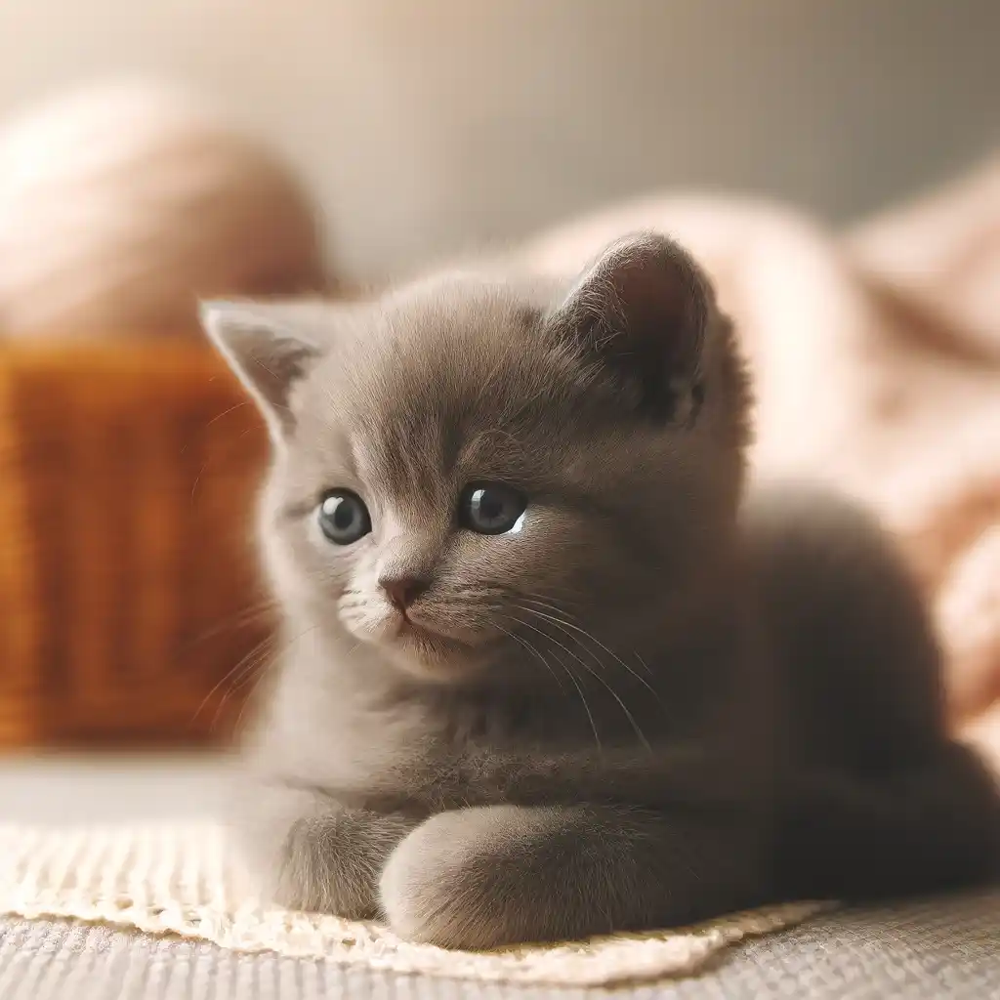
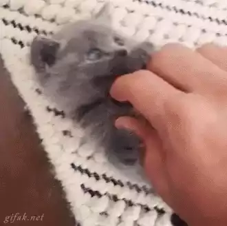
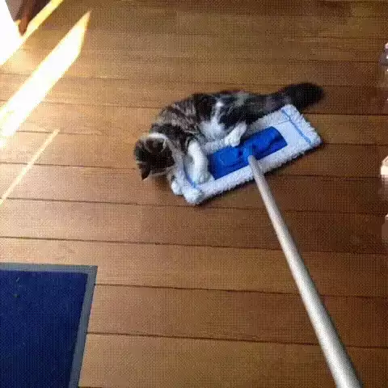
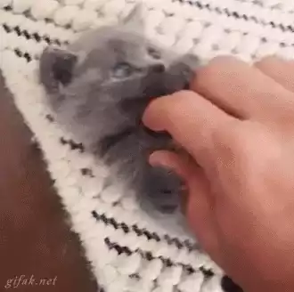
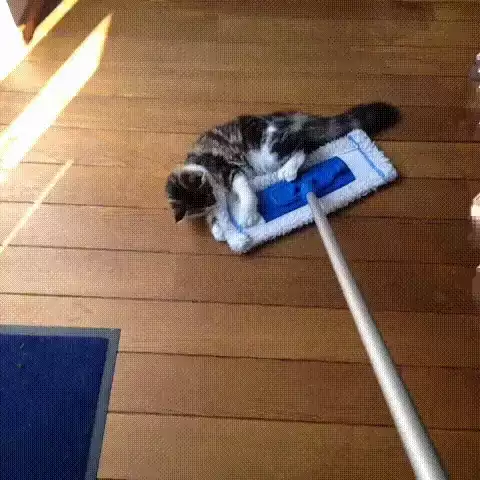

¡Bienvenido a nuestra web!
Somos amantes de los gatitos y aquí encontrarás toda la información que necesitas sobre estos adorables animales.
Nuestros Gatitos
 





Servicios para Gatitos
Ofrecemos una amplia gama de servicios para satisfacer todas las necesidades de tus gatitos, desde cuidados médicos hasta juguetes divertidos.
Contáctanos
¿Tienes alguna pregunta o sugerencia? ¡Contáctanos!
¡Descubre Más en Nuestro Sitio Web Externo!
Explora más contenido interesante y útil sobre el cuidado de los gatitos en nuestro sitio web externo. Encontrarás artículos, videos y recursos que te ayudarán a cuidar mejor a tu mascota. Haz clic en el enlace a continuación para visitar nuestro sitio web asociado y descubrir más.
En nuestro sitio web externo, podrás encontrar guías detalladas sobre la nutrición adecuada para gatos, consejos para el entrenamiento y comportamiento felino, y muchas historias de éxito de otros amantes de los gatos. Además, ofrecemos una comunidad donde puedes interactuar con otros dueños de gatos, compartir tus experiencias y obtener apoyo.
No te pierdas nuestros videos educativos que cubren una variedad de temas, desde cómo jugar de manera segura con tu gato hasta cómo identificar y tratar problemas de salud comunes. ¡Visítanos ahora y mejora la vida de tu gatito!
Click aquí para ver mas 


